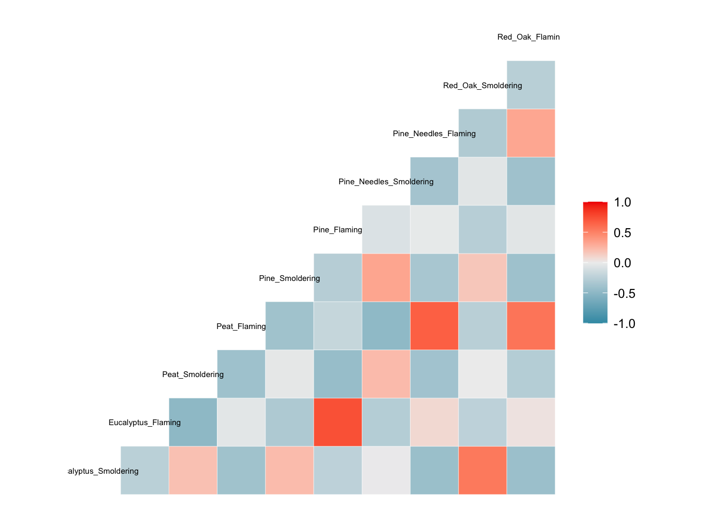

3.2 Basic Statistical Tests and Visualizations of Data Trends
3.2.1 Visualize and Test Data for Normality
When selecting the appropriate statistical tests to evaluate potential trends in your data, statistical test selection often relies upon whether or not the underlying data are normally distributed. Many statistical tests and methods that are commonly implemented in exposure science, toxicology, and environmental health research rely on assumptions of normality. Thus, one of the most common statistic tests to perform at the beginning of an analysis is a test for normality.
There are a few ways to evaluate the normality of a dataset:
First, you can visually gage whether a dataset appears to be normally distributed through plots. For example, plotting data using histograms, densities, or Q-Q plots can graphically help inform if a variable’s values appear to be normally distributed or not.
Second, you can evaluate normality using statistical tests, such as the Kolmogorov-Smirnov (K-S) test and Shapiro-Wilk test. When using these tests and interpreting their results, it is important to remember that the null hypothesis is that the sample distribution is normal, and a significant p-value means the distribution is non-normal.
Let’s start with the first approach, based on data visualizations. Here, let’s begin with a histogram to view the distribution of BMI data, as an example.

We can edit some of the parameters to improve this basic histogram visualization. For example, we can decrease the size of each bin using breaks parameter:

Let’s also view the Q–Q (quantile-quantile) plot using the qqnorm function
qqnorm(full.data$BMI)
qqline(full.data$BMI) # adding a reference line for theoretically normally distributed data
From these visualizations, the BMI variable appears to be normally distributed, with data centered in the middle and spreading with a distribution on both the lower and upper sides that follow typical normal data distributions.
Let’s now implement the second approach, based on statistical tests for normality. Here, let’s use the Shapiro-Wilk test as an example, again looking at the BMI data. This test can be carried out simply using the shapiro.test function from the base R stats package.
##
## Shapiro-Wilk normality test
##
## data: full.data$BMI
## W = 0.99232, p-value = 0.3773This test resulted in a p-value of 0.9014, so cannot reject the null hypothesis (that data are normally distributed). This means that we can assume that these data are normally distributed.
3.2.2 Two-Group Visualizations and Statistical Comparisons using the T-Test
T-tests are commonly used to test for a significant difference between the means of two groups. In this example, we will be comparing BMI measures between two groups: smokers vs. non-smokers. We will specifically be implementing a two sample t-test (or independent samples t-test).
Let’s first visualize the BMI data across these two groups using boxplots, for this example:
 From this plot, it looks like non-smokers (labeled 0) may have significantly higher BMI than smokers (labeled 1), though we need statistical evaluation of these data to more thoroughly evaluate this potential data trend.
It is easy to peform a t-test on these data using the t.test function from the base R stats package:
##
## Welch Two Sample t-test
##
## data: BMI by Smoker
## t = 2.5372, df = 80.362, p-value = 0.01311
## alternative hypothesis: true difference in means is not equal to 0
## 95 percent confidence interval:
## 0.583061 4.823447
## sample estimates:
## mean in group 0 mean in group 1
## 26.11176 23.40851From this statistical output, we can see that the overall mean BMI in group 0 (non-smokers) is 26, and the overall mean BMI in group 1 (smokers) is 23. We can also see that the resulting p-value comparison between the means of these two groups is, indeed, significant (p=0.0125), meaning that the means across these groups are significantly different (i.e., are not equal).
It’s also helpful to save these results into a variable within the R global environment, which then allows us to access specific output values and extract them more easily for our records. For example, we can run the following to specifically extract the resulting p-value from this test:
ttest.res <- t.test(data=full.data, BMI ~ Smoker) # making a list in the R global environment with the statistical results
ttest.res$p.value # pulling the p-value## [1] 0.01310998
3.2.3 Two-Group Visualizations and Statistical Comparisons using an ANOVA
Analysis of Variance (ANOVA) is a statistical method that can be used to compare means across more than two groups. To demonstrate an ANOVA test on this dataset, let’s evaluate BMI distributions across current vs. former vs. never smokers (using the ‘Smoker3’ variable from our dataset).
Let’s again, start by viewing these data distributions using a boxplot:

Let’s also calculate the group means using tidyverse syntax and the summarise function, as helpful example script:
## # A tibble: 3 x 2
## Smoker3 `mean(BMI)`
## <chr> <dbl>
## 1 Current 19.1
## 2 Former 26.5
## 3 Never 27.2From this cursory review of the data, it looks like the current smokers likely demonstrate significantly different BMI measures than the former and never smokers, though we need statistical tests to verify this potential trend. We also require statistical tests to evaluate potential differences (or lack of differences) between former and never smokers.
Let’s now run the ANOVA to compare BMI between smoking groups, using the aov function to fit an ANOVA model:
## Call:
## aov(formula = BMI ~ Smoker3, data = full.data)
##
## Terms:
## Smoker3 Residuals
## Sum of Squares 2046.713 6817.786
## Deg. of Freedom 2 197
##
## Residual standard error: 5.882861
## Estimated effects may be unbalancedWe can extract the typical ANOVA results table using either summary or anova on the resulting fitted object
## Analysis of Variance Table
##
## Response: BMI
## Df Sum Sq Mean Sq F value Pr(>F)
## Smoker3 2 2046.7 1023.36 29.57 5.888e-12 ***
## Residuals 197 6817.8 34.61
## ---
## Signif. codes: 0 '***' 0.001 '**' 0.01 '*' 0.05 '.' 0.1 ' ' 1From this ANOVA output table, we can conclude that the group means across all three groups are not equal.